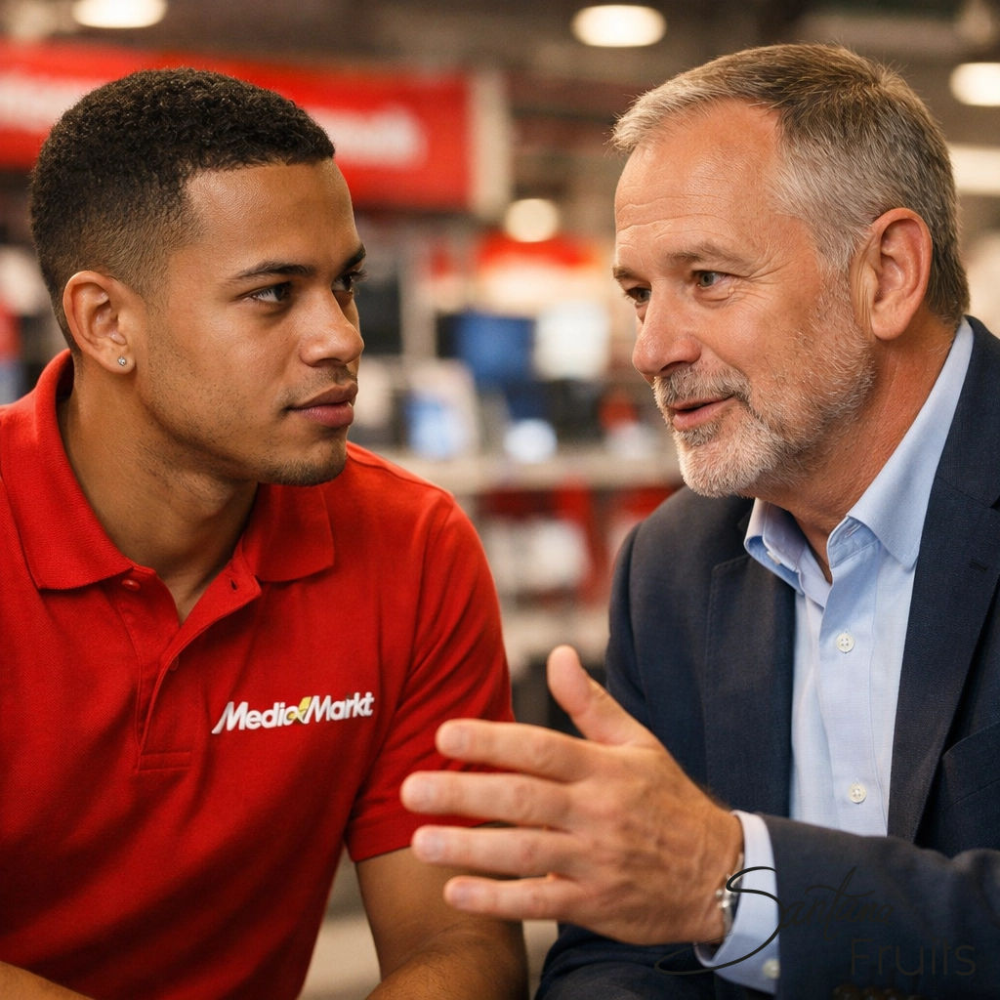
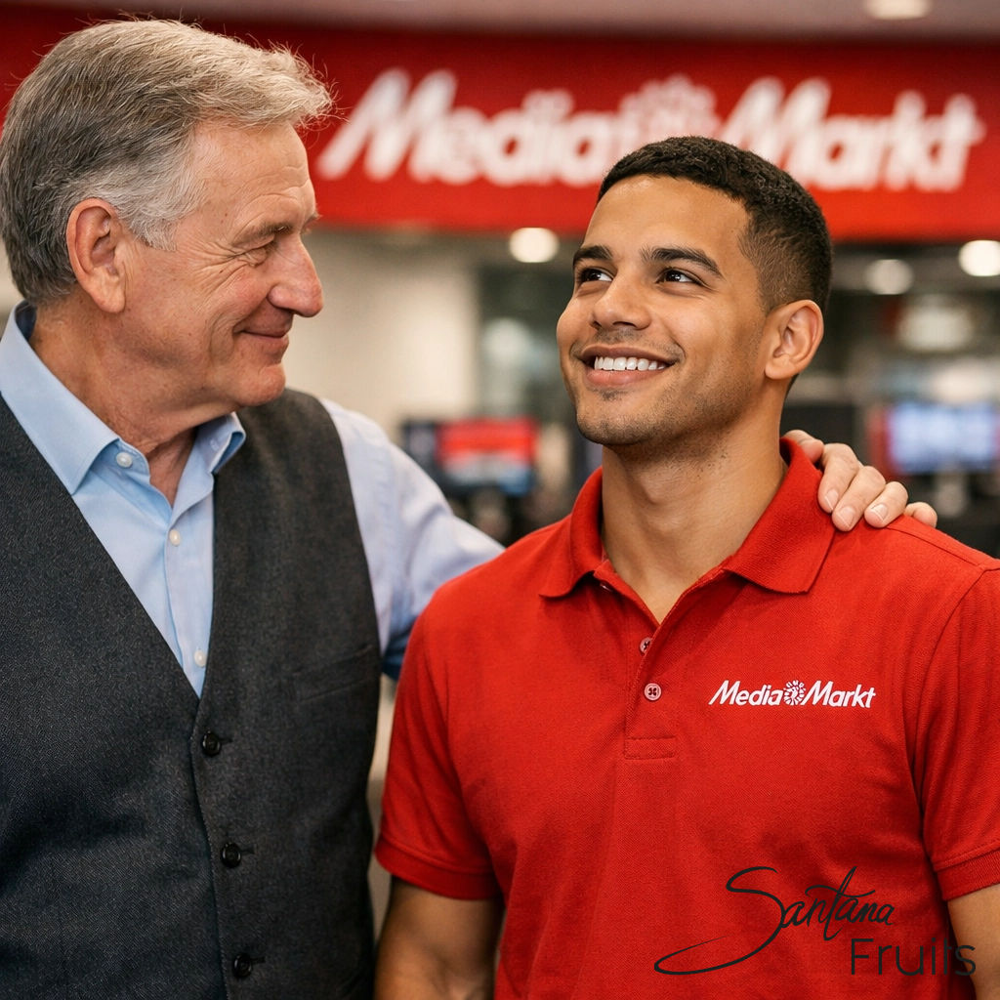
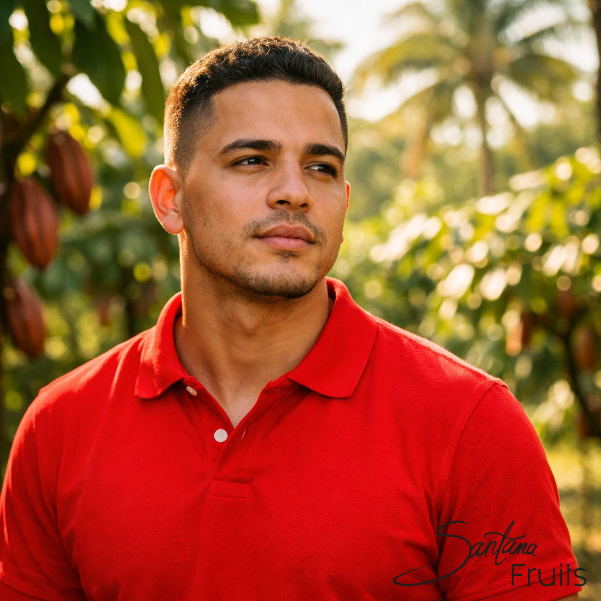

Erinnerst du dich an diesen einen Moment in deinem Leben, in dem ein einziger Satz alles verändert hat? Nicht, weil er besonders kompliziert war, sondern weil er eine Wahrheit aussprach, die du selbst zwar tief in dir gespürt, aber nie gewagt hattest, laut zu formulieren?
In meiner Geschichte gibt es diesen Moment ganz deutlich. Er fand nicht auf einer tropischen Plantage statt und auch nicht in einem schicken Konferenzraum. Er fand zwischen Regalen voller Fernseher und Laptops im MediaMarkt in Esslingen statt. Und der Mann, der diesen Moment auslöste, war mein damaliger Nachbar, Andreas Stachorski.
Zu diesem Zeitpunkt war ich bereits einen weiten Weg gegangen. Ich hatte mich vom einfachen Verkäufer bei Saturn hochgearbeitet, hatte meinen Handelsfachwirt in harten Abendschulstunden erkämpft und trug nun als Bereichsleiter bei MediaMarkt Verantwortung für ein ganzes Team und beachtliche Umsätze. Auf dem Papier hatte ich es geschafft. Ich war eine Führungskraft. Doch Andreas sah etwas, das hinter den Zahlen und dem Titel lag.
Als Bereichsleiter bei MediaMarkt lernte ich, was es bedeutet, den Kopf hinzuhalten. Es ging nicht mehr nur darum, ob ich persönlich eine gute Beratung ablieferte. Es ging darum, dass die Abteilung funktionierte. Waren die Regale voll? Waren die Mitarbeiter motiviert? Stimmten die Margen?
Ich liebte die Dynamik. Ich liebte es, Probleme zu lösen. Aber der Einzelhandel hat eine Eigenart: Er frisst dich auf, wenn du es zulässt. An jenem besagten Tag war die Hölle los. Mehrere Mitarbeiter waren krankgemeldet, die Kundenfrequenz war enorm hoch und die Lieferung neuer Ware war gerade erst eingetroffen.
Anstatt mich in mein Büro zurückzuziehen und Pläne zu schmieden, tat ich das, was ich immer tat: Ich packte mit an. Ich stand mitten im Laden, zerriss Kartons, räumte Ware in die Regale und versuchte gleichzeitig, drei Kunden auf einmal den Weg zu den Kaffeemaschinen zu weisen. Ich war verschwitzt, ich war im Tunnel und ich war in meinem Element – oder zumindest dachte ich das.
In diesem Chaos tauchte plötzlich Andreas auf. Andreas war nicht nur mein Nachbar, er war ein erfahrener Vertriebler und Unternehmenscoach. Ein Mann, der Menschen las, noch bevor sie das erste Wort gesagt hatten. Er hatte diese ruhige, fast schon analytische Art an sich, die einen dazu zwang, kurz innezuhalten.
Er stand einfach nur da, etwa zwei Meter von uns entfernt, und beobachtete mich eine Weile schweigend. Nicht dieses flüchtige „mal kurz gucken", sondern wirklich beobachten: wie ich mit hochgekrempelten Ärmeln Kartons aufriss, Ware nachzog und gleichzeitig versuchte, den Laden am Laufen zu halten, weil zu viele Kollegen krank waren. Das war kein Heldentum – das war Einzelhandel-Alltag. Aber Andreas sah mehr als nur „Kenny räumt Regale ein".
Schließlich kam er auf mich zu. Ich erwartete ein kurzes „Hallo" oder vielleicht eine Frage zu einem neuen Laptop-Modell. Aber Andreas machte keinen Smalltalk. Er sah mir direkt in die Augen, wartete einen Moment, bis der Lärm um uns herum für mich subjektiv leiser wurde, und sagte diesen einen Satz, der wie ein Paukenschlag einschlug:
„Kenny, was machst du hier eigentlich? Du verschwendest dein Talent."

Dieser Satz traf mich hart. Im ersten Moment war ich fast schon beleidigt – und gleichzeitig merkte ich, wie wahr er sich anfühlte. Ich war stolz auf das, was ich mir erarbeitet hatte: vom Verkäufer zum Handelsfachwirt, dann Bereichsleiter. Teamverantwortung. Zahlen. Ergebnisse. Auf dem Papier war das „angekommen".
Und trotzdem war da dieses leise Gespür in mir, dass mehr geht.
Doch Andreas ließ nicht locker. Er erklärte mir, was er sah: nicht nur jemanden, der „funktioniert", sondern jemanden mit Energie, Menschenkenntnis und strategischem Blick – und der seine Zeit gerade mit Arbeit füllte, die im Zweifel jeder solide Kollege ebenfalls hinbekommt.
Dann kam der Punkt, der bei mir hängen blieb: seine Definition von echtem Vertrieb. Nicht einfach nur fertige Produkte über den Tresen schieben, weil der Kunde ohnehin schon da ist. Sondern Ideen erklären. Vertrauen aufbauen. Märkte entwickeln. Wege finden, wo vorher keine waren. Kurz: nicht reagieren – gestalten.
„Du wartest hier darauf, dass Menschen zu dir kommen", sagte er sinngemäß. „Aber dein Platz ist da draußen. Dort, wo man nicht wartet, sondern wo man Märkte schafft."
In diesem Moment wurde mir klar, dass ich mich in einer Komfortzone eingerichtet hatte, die sich zwar nach Erfolg anfühlte, aber eigentlich eine Sackgasse für meine größeren Träume war. Die Vision von Santana Fruits, von der eigenen Produktion in der Dominikanischen Republik, vom direkten Import – all das war damals noch ein ferner Nebel. Aber Andreas hatte den ersten Stein ins Rollen gebracht, der diesen Nebel lichtete.

Andreas' Worte arbeiteten in mir. Wochenlang. Ich begann, meinen Job mit anderen Augen zu sehen. Ich verstand plötzlich den fundamentalen Unterschied zwischen dem, was ich tat, und dem, was echtes Unternehmertum erforderte.
Im Einzelhandel ist man Reaktiv-Verkäufer. Der Kunde hat ein Bedürfnis, er kommt in den Laden, und man bedient dieses Bedürfnis. Das ist eine wichtige Schule, keine Frage. Man lernt Kommunikation und Bedarfsanalyse. Aber man ist immer abhängig davon, dass die Türglocke läutet.
Andreas wollte mir zeigen, dass ich zum Aktiv-Verkäufer geboren war. Jemand, der eine Vision hat, ein Produkt identifiziert und dann aktiv auf Partner zugeht. Jemand, der nicht darauf wartet, dass die Welt zu ihm kommt, sondern der seine Welt selbst gestaltet.
Diese Erkenntnis war der eigentliche Geburtsmoment meines heutigen Mindsets bei Santana Fruits. Wenn wir heute in enger Zusammenarbeit mit dem Landwirtschaftsministerium moderne Anbau- und Bewässerungstechniken umsetzen oder verlässlich bis zu zwei Container (25 Tonnen) Rohkakao pro Monat mit konstant starken Analysewerten liefern, dann steckt genau diese Energie dahinter, die Andreas damals in mir gesehen hat: nicht warten, bis Nachfrage zufällig entsteht, sondern aktiv Beziehungen aufbauen, Versorgung sichern und Qualität planbar machen.
Andreas Stachorski hat mir an jenem Tag kein neues Jobangebot gemacht. Er hat mir kein Geld gegeben und auch keinen fertigen Businessplan. Er hat mir etwas viel Wertvolleres gegeben: die Erlaubnis, größer von mir selbst zu denken.
Manchmal brauchen wir jemanden von außen, der uns den Spiegel vorhält. Jemanden, der sagt: „Du bist gut in dem, was du tust, aber du bist für etwas anderes bestimmt."
Ohne diesen Weckruf wäre ich vielleicht noch Jahre bei MediaMarkt geblieben. Vielleicht ein noch erfolgreicherer Bereichsleiter geworden, vielleicht sogar Marktleiter. Aber ich wäre nie der Unternehmer geworden, der ich heute bin. Ich hätte nie die Brücke zwischen meiner Heimat in der Karibik und dem europäischen Markt gebaut.
Dieser Moment lehrte mich auch eine wichtige Lektion über Führung, die ich heute bei Santana Fruits anwende: Ich schaue bei meinen Mitarbeitern und Partnern nicht nur darauf, was sie gerade tun. Ich versuche zu sehen, was sie tun könnten. Ich möchte der Andreas Stachorski für mein Team sein – jemand, der Potenziale erkennt und fördert, auch wenn die Betroffenen selbst noch daran zweifeln.
Der Satz von Andreas war der Funke, aber das Feuer musste erst noch richtig entfacht werden. Kurz darauf passierte etwas, das man wohl als Schicksal bezeichnen könnte. Ein verärgerter Kunde im Laden wurde zu meiner Eintrittskarte in die Welt des echten Vertriebs.
Aber das ist eine Geschichte für das nächste Mal. Im nächsten Blogpost erzähle ich euch, wie eine missglückte Reklamation dazu führte, dass ich plötzlich einen Dienstwagen hatte und lernte, wie man Produkte verkauft, von denen die Kunden noch gar nicht wussten, dass sie existieren.
Bleibt dran – der Weg von den Regalen in Esslingen bis zu den Plantagen der Dominikanischen Republik war voller Kurven, die ich so niemals hätte planen können.
Euer Kenny
Möchtest du mehr über unsere Wurzeln und unsere heutige Arbeit erfahren? Schau dir unsere Farmer Stories an oder erfahre mehr über unsere Qualitätsansprüche.
Dieser Blogbeitrag ist Teil meiner persönlichen Serie über den Aufbau von Santana Fruits. Jeden Sonntag um 19:00 Uhr teile ich ein neues Kapitel meiner Reise mit euch.